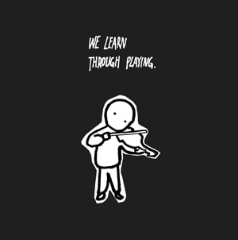
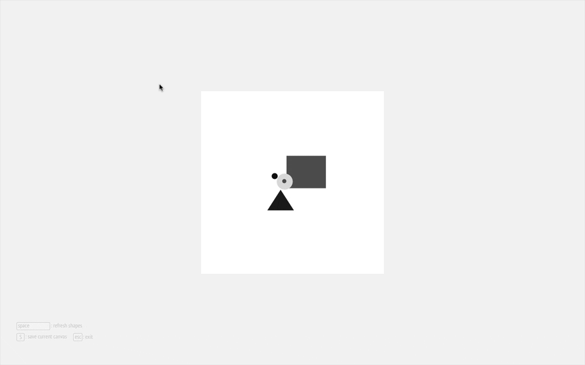
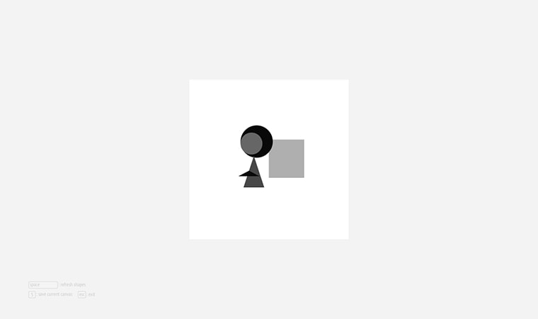
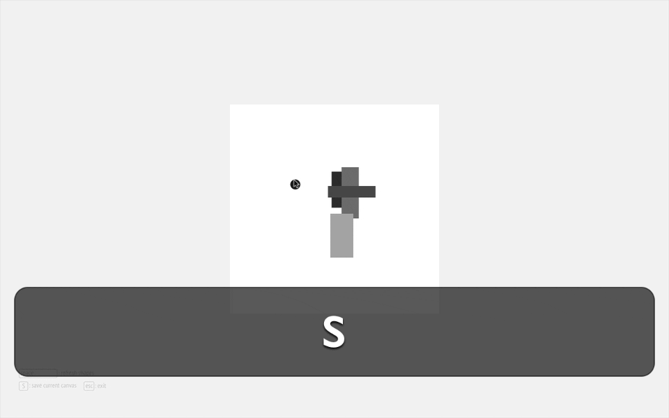
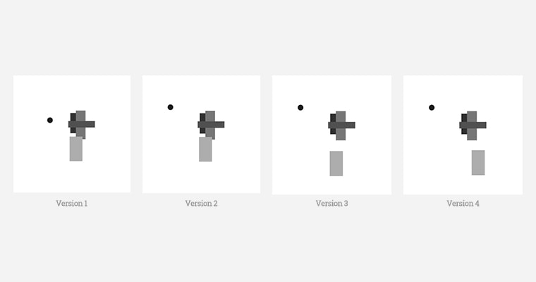
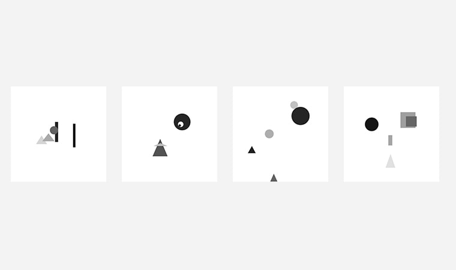
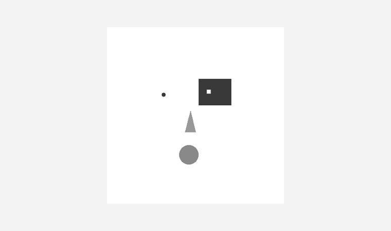

个人思考：“Play is the highest form of research.” 爱因斯坦曾说。现在，我们更多地关注machine learninig，提高机器的智力。然而，计算机不仅可以用作游戏、娱乐和购物等，更重要的，也能用来帮助我们学习。计算机技术应帮助我们，特别是孩子们，更加聪明。

We learn through playing.
项目信息
- 交互式软件
- 用户界面
- Processing 3
我做了
- 编写应用
- 试玩应用
- 搜集反馈
灵感来源
- Magic Ink
- Teaching to See
- The Best Interface Is No Interface

FormPlayer 应用 (源码)
想法
最开始的想法来自一部纪录片 Teaching to See，讲述者是一位当代艺术教育领域里杰出的设计师、教育家 Inge Druckrey。在她的一个课程中，她要求学生们用 5 个基本形状来练习平面构成。
设计练习
目标
这个项目的目标是设计并编写一个简单的应用来进行同样是 5 个形状的设计练习。
这样做主要有 2 个原因：
(1) 能动手尝试实现它，而不是 Redesign 一个包含完整功能的原型。
(2) 能更详细地体验到设计与实现之间如何进行协作。
设计
任务分析
首先，使用 Photoshop 或者 Sketch，来进行练习的操作流程如下:
(1) 新建一个画布
(2) 绘制一个形状
(3) 移动这个形状
(4) 重复步骤 2 和步骤 3 （4 次
(5) 创建另一版本
(6) 比较两个版本
Sketch 中的操作流程
用户界面
The Best Interface Is No Interface。用户界面帮助我们聚焦当前的操作，和进行更好地探索。第一版本 GUI 中的按钮，影响了对画布中平面布局的感知。所以，最终应用使用了按键替代按钮作为控制操作。
第一版本

最终版本
实现
根据任务分析，编写的程序能自动随机地产生 5 个形状，当按下空格键的时候。
这样做的考虑是：
(1) 用户能聚焦在移动和比较这两个操作上。
(2) 程序能给我们无穷多的形状组合，帮助我们探索更多的可能性。
按空格键重新开始

按 S 键保存

比较不同版本
试玩
这是本次项目最有意思和有价值的部分。这里搜集了一些自己和朋友们的试玩小作品。
我的小作品

朋友们的小作品
Gif
设计了一个小功能：当你退出程序的时候，能将保存下来的图合成一个 Gif 动图。
Gif
未来工作
该 Beta 版本应用还有很多不足，拖拽功能不是很流畅，而且保存和比较这两个功能没能很好在 Processing 中实现设想的效果。我希望下一本能更好地实现这些功能，比如通过直接拖拽文字来查看和比较保存的不同版本的图。
Version
Good interaction design helps us learn better.